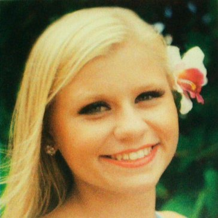

Courtney J. Wessel is a senior at the University of Miami majoring in electronic media with a double minor in public relations and dance. Wessel studied communication at Hawaii Pacific University her freshman year before transferring to the University of Miami. She attended Hawaii Pacific University on a dance scholarship and competed nationally. Wessel is seeking communications, electronic media, and public relations employment opportunities beginning May 2015.
